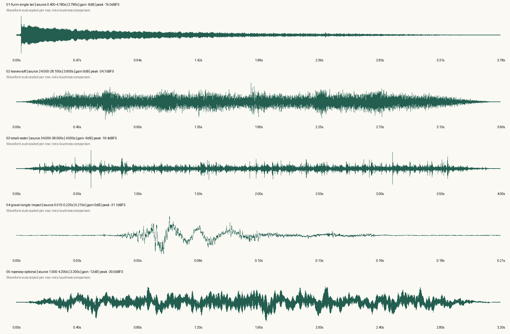
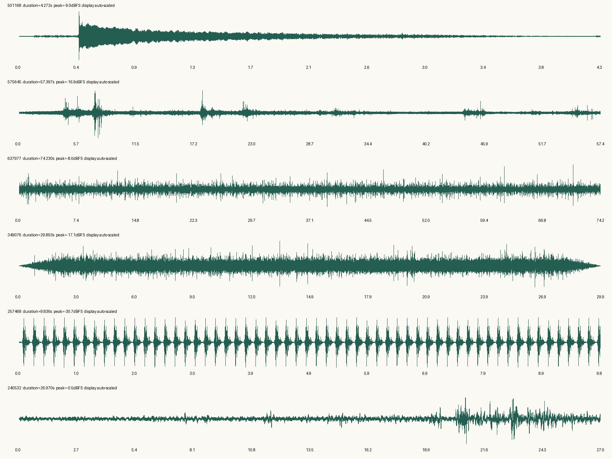

01 · 风铃：单次起音与尾音 · 3.78秒
小镇转场优先候选；保留自然衰减，不重复拼成旋律。
原件未覆盖。已检查波形与文件参数，尚未完成听感验收；不是最终混音。请逐条播放，先以较低设备音量开始。
小镇转场优先候选；保留自然衰减，不重复拼成旋律。
夜景落叶段；原本电平较低，没有为了响亮而放大。
温泉街入水意象备选，非温泉实录。使用637977小水流来源。
只用于前段步行备选，不用于片尾。需确认此短段是否听起来像完整自然的一步。
真实索道录音的相对安静开头，尚未确认是否符合低稳机械底音要求。CC BY 4.0，concretica；详细署名及改动见 README.md。
每行单独缩放，不代表各文件同等音量。

